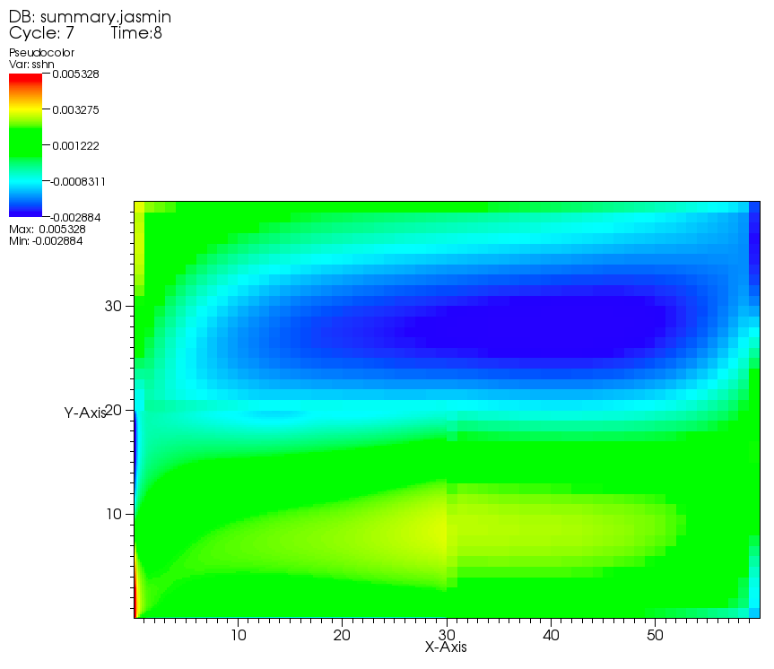
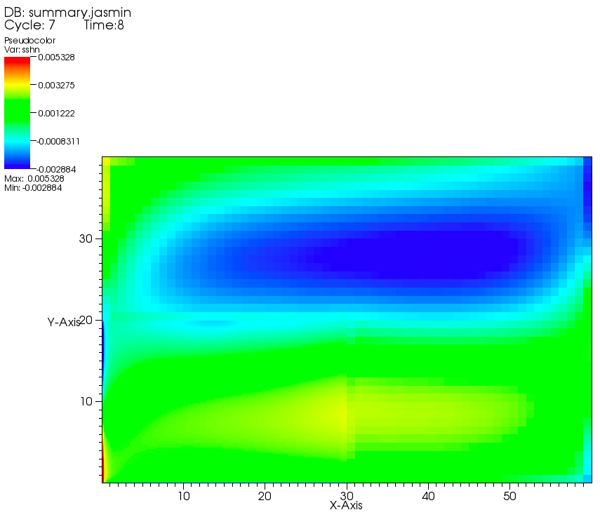
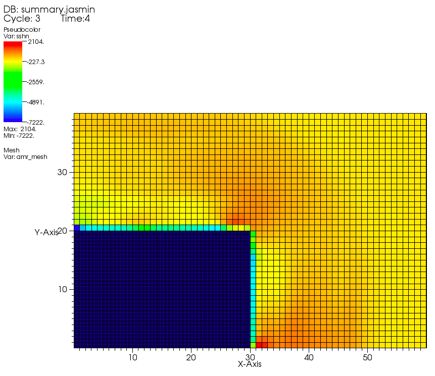

OMARE CoarsenOperator
# 新增自定义插值算子
参考 NemoSpaceInterpCenter.h 中的实现。
NemoSpaceMeanCenter.h | class NemoSpaceMeanCenter : public xfer::CoarsenOperator<NDIM> { |
| public: |
| NemoSpaceMeanCenter(){ |
| d_name_id = "NEMO_MEAN_INTERP"; |
| alpha = 0.5; |
| }; |
| |
| * @brief 在指定的粗网格内， |
| * 将细网格片上指定的数据片插值到粗网格片上指定的数据片上. |
| * @param fine 输入参数，Patch 类，表示细网格片. |
| * @param coarse 输入参数，Patch 类，表示粗网格片. |
| * @param dst_component 输入参数，整型，表示目的数据片. |
| * @param src_component 输入参数，整型，表示源数据片. |
| * @param coarse_box 输入参数，Box 类，表示粗化网格. |
| * @param ratio 输入参数，整型向量类，表示粗化比率. |
| */ |
| void coarsen(hier::Patch<NDIM>& coarse, const hier::Patch<NDIM>& fine, |
| const int dst_component, const int src_component, |
| const hier::Box<NDIM>& coarse_box, |
| const hier::IntVector<NDIM>& ratio) const{ |
| const hier::Box<NDIM> fine_box = hier::Box<NDIM>::refine(coarse_box, ratio); |
NemoFort.h | extern void space_mean_center_(int& ir00, int& jr00, int& ic00, int& jc00, |
| int& ir0, int& jr0, int& ir1, int& jr1, |
| int& ic0, int& jc0, int& ic1, int& jc1, |
| int& jpir, int& jpjr, double* ur, |
| int& jpic, int& jpjc, double* uc, |
| int* ratio); |
# Fortran 实现
JASMIN_FILLGHOST.F90 | SUBROUTINE space_mean_center( ir00, jr00, ic00, jc00, & |
| ir0, jr0, ir1, jr1, & |
| ic0, jc0, ic1, jc1, & |
| jpir, jpjr, uf, & |
| jpic, jpjc, uc, & |
| ratio) bind(c, name="space_mean_center_") |
| |
| INTEGER, INTENT(in) :: ir00, jr00, ic00, jc00 |
| INTEGER, INTENT(in) :: ir0, jr0, ir1, jr1 |
| INTEGER, INTENT(in) :: ic0, jc0, ic1, jc1 |
| INTEGER, INTENT(in) :: jpir, jpjr |
| REAL(wp), DIMENSION(jpir,jpjr), INTENT(in) :: uf |
| INTEGER, INTENT(in) :: jpic, jpjc |
| REAL(wp), DIMENSION(jpic,jpjc), INTENT(inout) :: uc |
| INTEGER, DIMENSION(2), INTENT(in) :: ratio |
| |
| |
| INTEGER :: ic, jc |
| INTEGER :: ic_loc, jc_loc |
| REAL(wp) :: sum_ |
| |
| DO jc = jc0, jc1 |
| DO ic = ic0, ic1 |
| sum_ = SUM(uf((ic-1)*ratio(1)+1 -ir00+1:ic*ratio(1)-ir00+1,(jc-1)*ratio(2)+1 -jr00+1:jc*ratio(2)-jr00+1)) |
| |
| ic_loc = ic - ic00 +1 |
| jc_loc = jc - jc00 +1 |
| uc(ic_loc, jc_loc) = sum_ / REAL(ratio(1)*ratio(2),wp) |
| ENDDO |
| ENDDO |
| |
| END SUBROUTINE space_mean_center |
# 启用 Overlay
这里 sync_time % 1 != 0 的 1 改为 Overlay 的步长。
NemoLevelIntegrator_body.C Producer.py | |
| * AMR, 同步粗网格层. |
| *****************************************************************/ |
| void NemoLevelIntegrator::synchronizeCoarserLevel( |
| const JASMIN::tbox::Pointer<JASMIN::hier::BasePatchHierarchy<NDIM>> |
| hierarchy, |
| const int finer_level_number, const double sync_time, |
| const double coarser_old_time) { |
| using namespace std; |
| using namespace JASMIN; |
| |
| if((int)sync_time % 1 != 0) return; |
| tbox::pout<<"***********************************************"<<endl; |
| tbox::pout<<"Synchronize (Overlay) Coarser Level... "<<endl; |
| tbox::pout<<" finer_level_number=="<<finer_level_number<<endl; |
| tbox::pout<<" sync_time=="<<sync_time<<endl; |
| tbox::pout<<" coarser_old_time=="<<coarser_old_time<<endl; |
| tbox::pout<<"***********************************************"<<endl; |
| |
| |
| tbox::Pointer<hier::PatchLevel<NDIM>> finer_level = |
| hierarchy->getPatchLevel(finer_level_number); |
| tbox::Pointer<hier::PatchLevel<NDIM>> coarser_level = |
| hierarchy->getPatchLevel(finer_level_number - 1); |
| |
| const double actual_dt = sync_time - coarser_old_time; |
| |
| |
| sync_overlay_intc->synchronizeCoarserLevel(finer_level, sync_time); |
| } |
# 注册使用插值算子的变量
Producer.py var_db.py | OVERLAY_DOUBLE_INTERP_CENTER = "NEMO_MEAN_INTERP" |
| t_field_list = [ |
| "tsn", "tsb", |
| "sshn", "sshb", |
| "avm_k" |
| ] |
| with open("Overlayregister.h", "w") as f: |
| |
| for field in t_field_list: |
| f.write("intc->registerCoarsenPatchData(manager->"+field+"_id,\n") |
| f.write(" \""+OVERLAY_DOUBLE_INTERP_CENTER+"\",\n") |
| f.write(" manager->"+field+"_id);\n") |
main_Nemo.C | #include "NemoSpaceMeanCenter.h" |
| |
| tbox::Pointer<JASMIN::pdat::NemoSpaceMeanCenter> nemo_space_mean_center_operator |
| = new JASMIN::pdat::NemoSpaceMeanCenter(); |
| grid_geometry->addSpatialCoarsenOperator(nemo_space_mean_center_operator); |
# 与 “CONSERVATIVE_COARSEN” 比较
| h5diff omare_mean/build/exp_l2/javis_dump.00006/processor_cluster.00000.jasmin omare_220608/build/exp_l2/javis_dump.00006/processor_cluster.00000.jasmin |
size: [2400] [2400]
position sshn sshn difference
------------------------------------------------------------
[ 900 ] 6.04414e-07 6.04414e-07 5.68434e-14
1 differences found
dataset: </processor.00000/level.00001/patch.00000/un.38> and </processor.00000/level.00001/patch.00000/un.38>
size: [15000] [15000]
position un.38 un.38 difference
------------------------------------------------------------
[ 145 ] -1.00591e-05 -1.00591e-05 9.09495e-13
[ 210 ] -1.2723e-06 -1.2723e-06 1.13687e-13
[ 1985 ] -8.53e-07 -8.53e-07 5.68434e-14
[ 2438 ] -1.50793e-05 -1.50793e-05 9.09495e-13
加上 1e-10 的限制后只有 14 个差异值。
# sshn


